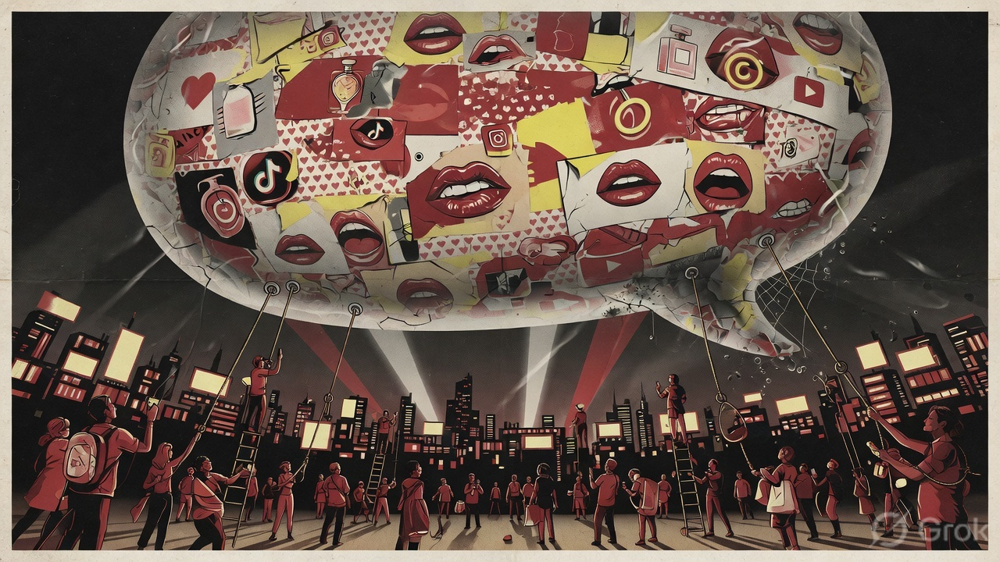

The basic structure of marketing got broke way before, and still I don't think we see it
The amount of marketing around us has increased far more than the number of products or the level of real demand. It's no longer occasional or strategic — it's constant, everywhere, and expanding.
This wasn't always the case.
Earlier, marketing was constrained by distribution. a limited number of channels — tv, newspapers, outdoor — meant limited inventory. Not every product could be marketed at scale, and not every voice could participate. There was an implicit filter.
That constraint is gone.
Today, distribution is effectively infinite. Anyone with an audience becomes a marketing surface. Creators are no longer just participants — they are the channel. In many cases, the selling power has shifted away from the product itself toward the person promoting it.

This changes the structure of the system.
The supply of marketing has exploded — more creators, more platforms, more content, all competing for the same finite resource: attention. But attention hasn't scaled at the same rate. When supply expands faster than the underlying demand, the system doesn't stabilize — it distorts.
You start to see:
~ diminishing returns on spend
~ increasing noise relative to signal
~ erosion of trust in what's being promoted
At some point, the gap has to correct. Either marketing becomes less effective, or the system resets through a loss of trust, attention, or economic viability for the participants involved. We are experiencing the latter.